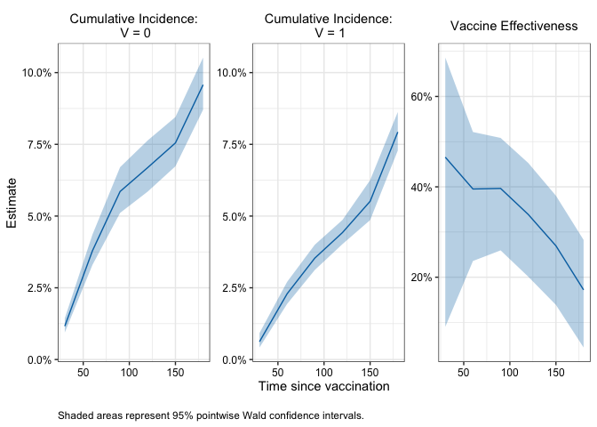
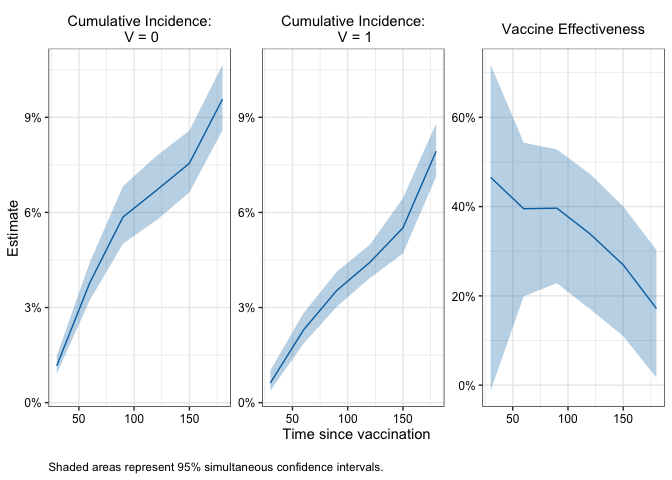
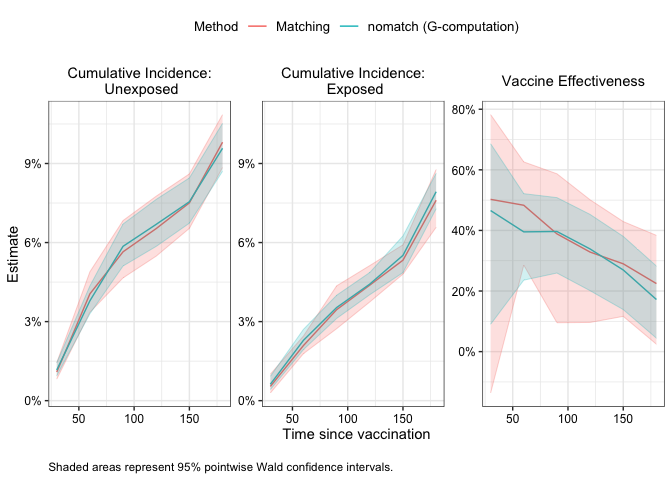

A matching alternative for more efficiently evaluating vaccine effectiveness using observational data
Description
The nomatchVE package uses a G-computation style estimator to compute vaccine effectiveness from observational vaccine studies. The proposed estimator tends to produce similar point estimates as matching-based estimators but can be more efficient.
Installation
You can install the development version of nomatchVE with:
# install.packages("devtools")
devtools::install_github("ewu16/nomatchVE")Example
This minimal example shows how to use nomatchVE to obtain cumulative incidence and vaccine effectiveness estimates in a simple simulated data set.
#Load package
library(nomatchVE)
# Example data
head(simdata)
#> ID x1 x2 V D_obs Y event
#> 1 1 1 7 1 2 92 0
#> 2 2 0 7 0 NA 210 0
#> 3 3 0 11 1 35 210 0
#> 4 4 0 10 1 6 210 0
#> 5 5 1 11 0 NA 210 0
#> 6 6 1 7 0 NA 90 0
summary(simdata)
#> ID x1 x2 V
#> Min. : 1 Min. :0.0000 Min. : 5.000 Min. :0.0000
#> 1st Qu.: 2501 1st Qu.:0.0000 1st Qu.: 6.000 1st Qu.:0.0000
#> Median : 5000 Median :0.0000 Median : 8.000 Median :0.0000
#> Mean : 5000 Mean :0.4989 Mean : 8.023 Mean :0.4112
#> 3rd Qu.: 7500 3rd Qu.:1.0000 3rd Qu.:10.000 3rd Qu.:1.0000
#> Max. :10000 Max. :1.0000 Max. :11.000 Max. :1.0000
#>
#> D_obs Y event
#> Min. : 1.00 Min. : 1 Min. :0.0000
#> 1st Qu.: 11.00 1st Qu.:174 1st Qu.:0.0000
#> Median : 18.00 Median :210 Median :0.0000
#> Mean : 25.78 Mean :178 Mean :0.1007
#> 3rd Qu.: 32.00 3rd Qu.:210 3rd Qu.:0.0000
#> Max. :206.00 Max. :210 Max. :1.0000
#> NA's :5888
# Compute cumulative incidence
fit1 <- nomatchVE(data = simdata,
outcome_time = "Y",
outcome_status = "event",
exposure = "V",
exposure_time = "D_obs",
covariates = c("x1", "x2"),
tau = 14,
eval_times = seq(30, 180, by = 30),
boot_reps = 10)
#> Bootstrapping 10 samples...
#> Time difference of 1.452928 secs
#Print results
fit1
#>
#> Vaccine Effectiveness Estimates
#> ==================================================
#> Call: nomatchVE(data = simdata, outcome_time = "Y", outcome_status = "event",
#> exposure = "V", exposure_time = "D_obs", covariates = c("x1",
#> "x2"), tau = 14, eval_times = seq(30, 180, by = 30),
#> boot_reps = 10)
#>
#> Result:
#> Timepoint Estimate 95% Wald CI: Lower 95% Wald CI: Upper
#> 1 30 0.466 0.0902 0.686
#> 2 60 0.395 0.2359 0.521
#> 3 90 0.397 0.2594 0.508
#> 4 120 0.339 0.2011 0.453
#> 5 150 0.269 0.1387 0.380
#> 6 180 0.172 0.0444 0.283
#>
#> Use summary() for more details
#> Use plot() to visualize results
#Summary
summary(fit1)
#>
#> ======================================================================
#> Vaccine Effectiveness Analysis Summary
#> ======================================================================
#>
#> Method: nomatchVE (G-computation)
#> Evaluation times: 30, 60, 90, 120, 150, 180
#> Tau (delay period): 14
#> Adjusted for: x1, x2
#>
#> Bootstrap: 10 replicates
#> Confidence level: 95 %
#> Successful samples: 10-10 (range across timepoints)
#>
#> ----------------------------------------------------------------------
#> Sample:
#> ----------------------------------------------------------------------
#> N total: 10000
#> Number of events: 1007
#>
#> N Exposed: 4112
#> N Exposed at-risk <tau> days after exposure: 4045
#>
#> Distribution of exposure times among at-risk <tau> days after exposure:
#> Range: 1 - 194 | Median (IQR): 18 (11 - 32) | Mean: 25.5
#>
#> ----------------------------------------------------------------------
#> Model for unexposed:
#> ----------------------------------------------------------------------
#> N = 10000 | Number of events = 664
#>
#> coef exp(coef) se(coef) z Pr(>|z|)
#> x1 0.158 1.171 0.078 2.028 0.043
#> x2 -0.056 0.945 0.019 -2.906 0.004
#>
#> ----------------------------------------------------------------------
#> Model for exposed:
#> ----------------------------------------------------------------------
#> N = 4045 | Number of events = 265
#>
#> coef exp(coef) se(coef) z Pr(>|z|)
#> x1 0.169 1.184 0.124 1.365 0.172
#> x2 -0.089 0.915 0.031 -2.896 0.004
#> splines::ns(D_obs, df = 4)1 0.600 1.821 0.335 1.789 0.074
#> splines::ns(D_obs, df = 4)2 0.652 1.918 0.621 1.049 0.294
#> splines::ns(D_obs, df = 4)3 -0.422 0.656 1.127 -0.375 0.708
#> splines::ns(D_obs, df = 4)4 -0.906 0.404 2.117 -0.428 0.669
#>
#> ======================================================================
#Plot pointwise intervals
plot(fit1) 
#Compute simultaneous CI
fit1_with_simul <- add_simultaneous_ci(fit1, seed = 1234)
#Plot simultaneous confidence bands
plot(fit1_with_simul , ci_type = "simul") 
# ------------------------------------------------------------------------------
# 3. Compare results with matching estimator
matched_cohort <- match_rolling_cohort(data = simdata,
outcome_time = "Y",
exposure = "V",
exposure_time = "D_obs",
matching_vars = c("x1", "x2"),
id_name = "ID",
seed = 5678)
matched_data <- matched_cohort[[1]]
fit_matching <-matching_ve(matched_data = matched_data,
outcome_time = "Y",
outcome_status = "event",
exposure = "V",
exposure_time = "D_obs",
tau = 14,
eval_times = seq(30, 180, by = 30),
boot_reps = 10)
#> Bootstrapping 10 samples...
#> Time difference of 0.80884 secs
fit_matching
#>
#> Vaccine Effectiveness Estimates
#> ==================================================
#> Call: matching_ve(matched_data = matched_data, outcome_time = "Y",
#> outcome_status = "event", exposure = "V", exposure_time = "D_obs",
#> tau = 14, eval_times = seq(30, 180, by = 30), boot_reps = 10)
#>
#> Result:
#> Timepoint Estimate 95% Wald CI: Lower 95% Wald CI: Upper
#> 1 30 0.503 -0.1366 0.782
#> 2 60 0.483 0.2854 0.626
#> 3 90 0.389 0.0954 0.587
#> 4 120 0.329 0.0963 0.501
#> 5 150 0.290 0.1163 0.429
#> 6 180 0.225 0.0245 0.384
#>
#> Use summary() for more details
#> Use plot() to visualize results
## Plot matching vs proposed estimator - nomatch tends to have similar point estimates but narrower
# confidence intervals
compare_ve_fits(fit_matching, fit1, labels = c("Matching", "nomatch (G-computation)"))
Issues
If you encounter any bugs or have any specific feature requests, please file an issue.